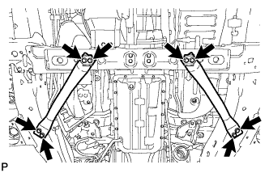
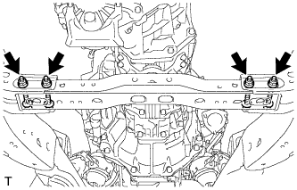
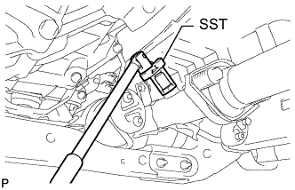

ВЫПУСКНАЯ ТРУБА (для моделей с DPF) > СНЯТИЕ |
| 1. СНИМИТЕ ВЫХЛОПНУЮ ТРУБУ В СБОРЕ |
 |
Выверните 2 болта и отсоедините выхлопную трубу от опоры выпускной трубы.
| *A | Для 3-дверных моделей |
| *B | Для 5-дверных моделей |
Снимите прокладку.
| 2. СНИМИТЕ ЦЕНТРАЛЬНУЮ ВЫПУСКНУЮ ТРУБУ В СБОРЕ |
Для 3-дверных моделей:
Выверните 2 болта и снимите 2 пружины сжатия, затем отсоедините центральную выпускную трубу от 2 опор выпускной трубы.
Для 5-дверных моделей:
Выверните 2 болта и снимите 2 пружины сжатия, затем отсоедините центральную выпускную трубу от 3 опор выпускной трубы.
Выверните 2 болта и снимите гаситель колебаний выпускной трубы.
Отверните гайки и снимите теплозащитный экран выпускной трубы № 1.
Снимите прокладку.
| 3. СНИМИТЕ ЛЕВЫЙ КРОНШТЕЙН ЭЛЕМЕНТА ПЕРЕДНЕЙ ПОДВЕСКИ (для моделей с механической трансмиссией) |
 |
Выверните 4 болта и снимите левый кронштейн элемента передней подвески.
| 4. СНИМИТЕ ПРАВЫЙ КРОНШТЕЙН ЭЛЕМЕНТА ПЕРЕДНЕЙ ПОДВЕСКИ (для моделей с механической трансмиссией) |
 |
Выверните 4 болта и снимите правый кронштейн элемента передней подвески.
| 5. СНИМИТЕ ПРАВЫЙ КРОНШТЕЙН ЭЛЕМЕНТА ПЕРЕДНЕЙ ПОДВЕСКИ (для моделей с автоматической трансмиссией) |
|  |
Выверните 8 болтов и снимите левый и правый кронштейны элемента передней подвески.
| 6. ПОДДОМКРАТЬТЕ ТРАНСМИССИЮ И РАЗДАТОЧНУЮ КОРОБКУ В СБОРЕ |
Поддомкратьте трансмиссию и раздаточную коробку телескопическим гидравлическим домкратом.
| 7. СНИМИТЕ ПОПЕРЕЧИНУ РАМЫ № 3 В СБОРЕ (для моделей с автоматической трансмиссией) |
 |
Выверните 4 болта из подушки задней опоры двигателя.
 |
Отверните 4 гайки и снимите 4 болта и поперечину рамы.
| 8. СНИМИТЕ ПОПЕРЕЧИНУ РАМЫ № 3 В СБОРЕ (для моделей с механической трансмиссией) |
Подоприте заднюю часть трансмиссии с помощью опорной стойки.
 |
Выверните 4 болта из поперечины рамы № 3 в сборе.
|  |
Отверните 4 гайки и снимите 4 болта и поперечину рамы № 3 в сборе.
| 9. СНИМИТЕ КРОНШТЕЙН ОПОРЫ ВЫПУСКНОЙ ТРУБЫ № 2 В СБОРЕ |
Выверните 2 болта и снимите кронштейн опоры выпускной трубы № 2 с кузова.
| 10. СНИМИТЕ КРОНШТЕЙН ОПОРЫ ВЫПУСКНОЙ ТРУБЫ № 3 В СБОРЕ |
Выверните 2 болта и снимите кронштейн опоры выпускной трубы № 3 с поперечины рамы № 3.
| 11. СНИМИТЕ ДАТЧИК СОСТАВА ТОПЛИВОВОЗДУШНОЙ СМЕСИ |
 |
Отсоедините разъем датчика состава топливовоздушной смеси и освободите зажим.
|  |
С помощью SST снимите датчик состава топливовоздушной смеси с приемной трубы.
| 12. СНИМИТЕ ПРИЕМНУЮ ТРУБУ В СБОРЕ |
Отсоедините разъем датчика температуры отработавших газов.
Отсоедините разъем датчика температуры отработавших газов № 2.
Отсоедините разъем датчика температуры отработавших газов № 3.
Отсоедините воздушный шланг выпускной трубы № 6 от приемной трубы.
Отсоедините воздушный шланг выпускной трубы № 7 от приемной трубы.
Снимите 2 опоры выпускной трубы.
Отверните 3 гайки и снимите приемную трубу.
Снимите прокладку.
| 13. СНИМИТЕ ДАТЧИК ТЕМПЕРАТУРЫ ОТРАБОТАВШИХ ГАЗОВ |
С помощью разрезной головки 14 мм снимите датчик температуры отработавших газов.
| 14. СНИМИТЕ ДАТЧИК ТЕМПЕРАТУРЫ ОТРАБОТАВШИХ ГАЗОВ № 2 |
С помощью разрезной головки 14 мм снимите датчик температуры отработавших газов № 2.
| *A | для моделей с автоматической трансмиссией |
| *B | для моделей с механической трансмиссией |
| 15. СНИМИТЕ ДАТЧИК ТЕМПЕРАТУРЫ ОТРАБОТАВШИХ ГАЗОВ № 3 |
 |
Открепите жгут проводов датчика.
С помощью разрезной головки 14 мм снимите датчик температуры отработавших газов № 3.
| 16. СНИМИТЕ КРОНШТЕЙН ЗАЖИМА ЖГУТА ПРОВОДОВ № 3 |
Выверните болт и снимите кронштейн зажима жгута проводов № 3.
| 17. СНИМИТЕ ЗАЖИМ ВЫПУСКНОЙ ТРУБЫ В СБОРЕ |
 |
Выверните болт и снимите зажим выпускной трубы.
| 18. СНИМИТЕ ЗАЩИТУ МОНОЛИТНОГО КАТАЛИТИЧЕСКОГО НЕЙТРАЛИЗАТОРА |
 |
Выверните 4 болта и отверните 4 гайки.
Снимите верхнюю защиту монолитного каталитического нейтрализатора и нижнюю защиту монолитного каталитического нейтрализатора.
| *1 | Верхняя защита монолитного каталитического нейтрализатора |
| *2 | Нижняя защита монолитного каталитического нейтрализатора |
| 19. СНИМИТЕ ОПОРУ ЗАЩИТЫ НЕЙТРАЛИЗАТОРА |
Снимите 2 опоры защиты нейтрализатора № 1 и 2 опоры защиты нейтрализатора № 2.
| *1 | Опора защиты нейтрализатора № 1 |
| *2 | Опора защиты нейтрализатора № 2 |